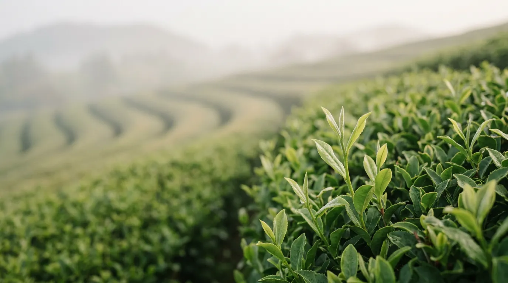
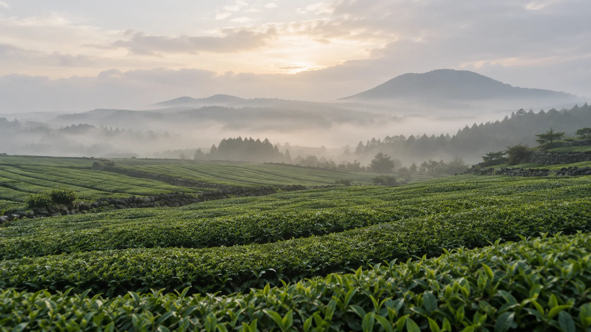
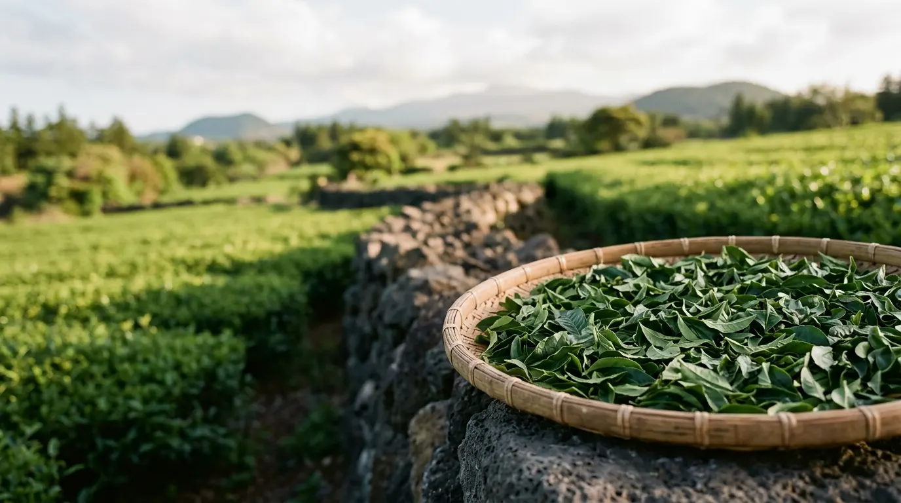
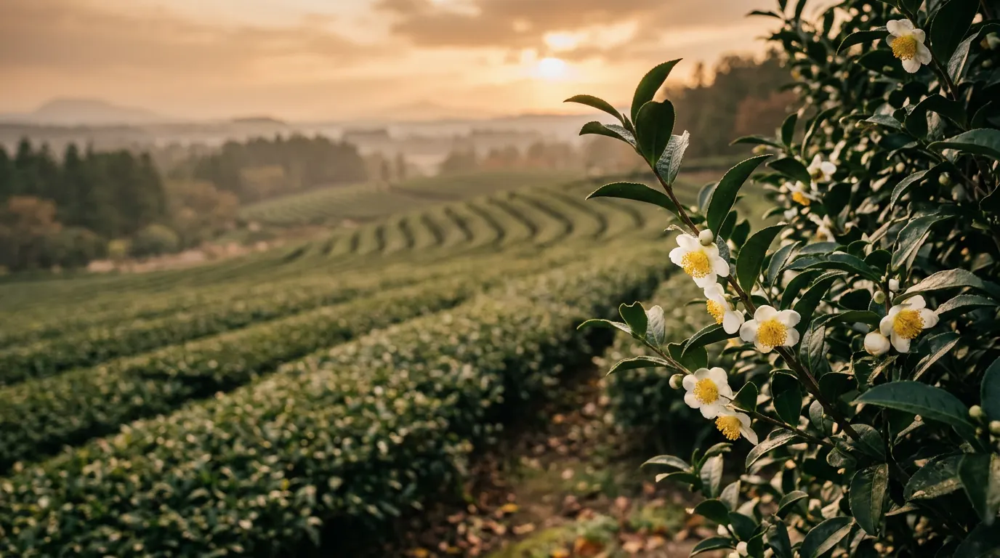
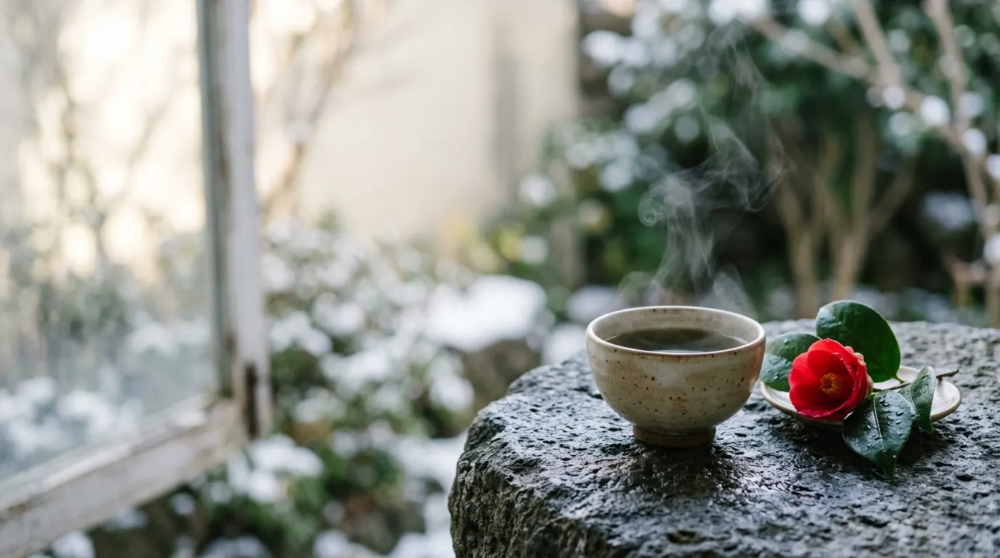
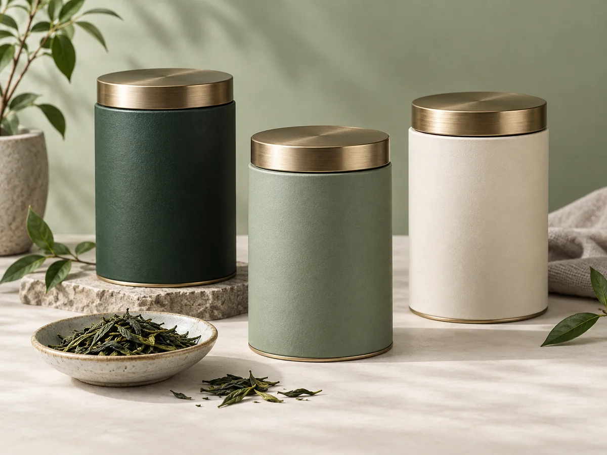
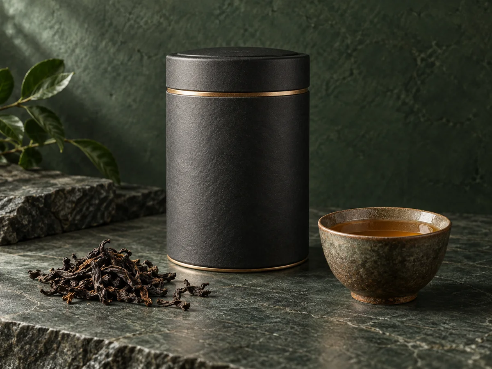
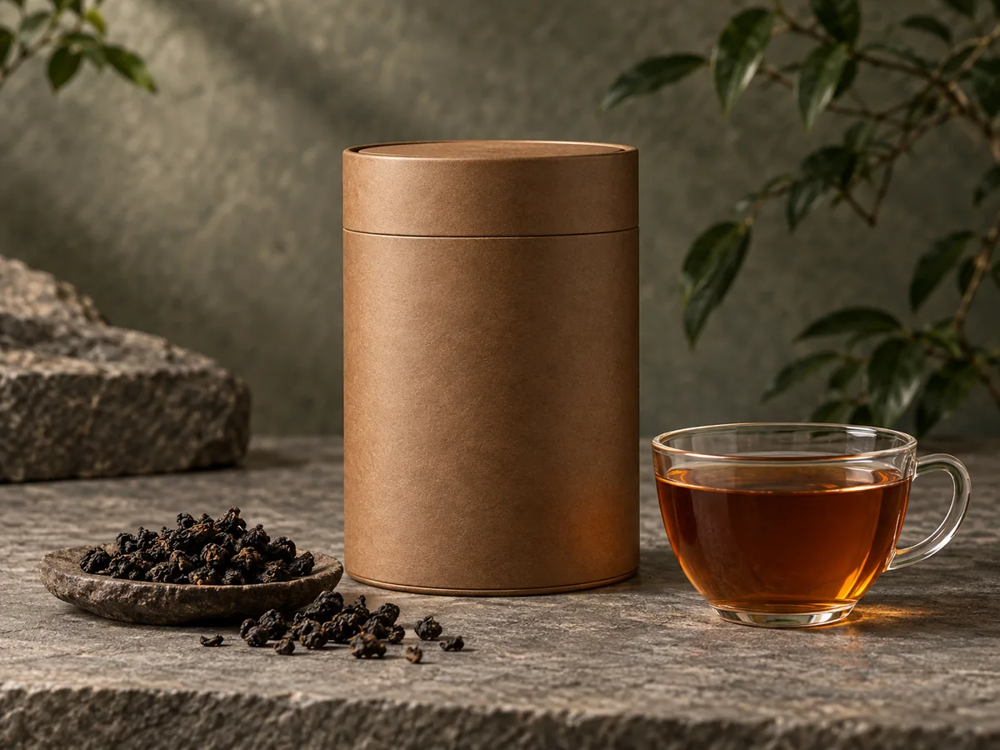
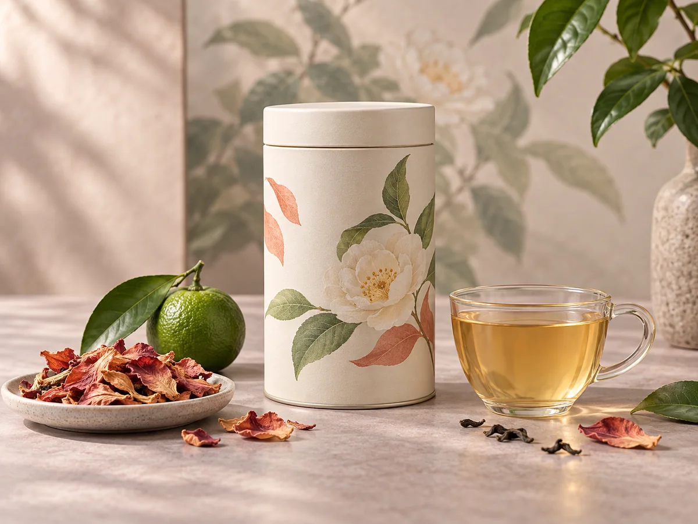

봄
곡우 무렵, 첫물차를 땁니다
겨울을 난 차나무에 새순이 올라오면 한 해 첫 수확을 합니다. 곡우(4월 20일 무렵) 전에 딴 잎은 우전, 곡우부터 입하 사이에 딴 잎은 세작이 됩니다. 딴 잎은 그날 바로 솥에서 덖어 산화를 멈춥니다.
이 계절의 차 우전, 곡우 전에 딴 첫 잎으로 만듭니다.

Tea from Jeju Island
한라산 남서쪽 자락, 안개가 잦은 화산 토양에서 차나무가 자랍니다. 봄에 첫 잎을 따는 날부터 겨울에 차를 우리는 날까지, 다원의 한 해를 계절 순서로 따라갑니다.

봄
겨울을 난 차나무에 새순이 올라오면 한 해 첫 수확을 합니다. 곡우(4월 20일 무렵) 전에 딴 잎은 우전, 곡우부터 입하 사이에 딴 잎은 세작이 됩니다. 딴 잎은 그날 바로 솥에서 덖어 산화를 멈춥니다.
이 계절의 차 우전, 곡우 전에 딴 첫 잎으로 만듭니다.

여름
초여름이 되면 차나무가 다시 새순을 올립니다. 이때 딴 두물차는 햇빛을 오래 받아 잎이 크고 떫은맛이 강합니다. 그래서 녹차로 덖기보다 비비고 발효시켜 홍차와 발효차를 만듭니다.
이 계절의 차 제주숲홍차, 진하게 우러나서 우유를 넣어 밀크티로 마셔도 좋습니다.

가을
10월 무렵 차나무에 작고 흰 꽃이 핍니다. 여름에 만든 발효차는 이 계절 내내 숙성되며 떫은맛이 줄고 맛이 부드러워집니다. 삼다연은 삼나무 통에 담아 숙성합니다.
이 계절의 차 삼다연, 녹차보다 떫은맛이 적고 구수합니다.

겨울
겨울에는 차나무가 새순을 내지 않고 쉽니다. 제주에 동백이 피는 이 계절에는 한 해 동안 만든 차를 우려 마십니다.
우리는 온도 녹차는 70~80도로 식힌 물에, 발효차와 홍차는 막 끓인 물에 우리면 됩니다.
녹차·발효차·홍차·블렌디드에서 하나씩
학습용 제품 구성과 목업 이미지입니다. 표시 금액은 용량·입수 기준을 정하지 않은 예시로, 실제 판매 가격이나 제품 간 가격 비교 기준이 아닙니다.

녹차
곡우가 지나고 딴 어린 잎으로 만든 녹차. 매일 마시기에 무난합니다.
예시 가격 ₩24,000
발효차
삼나무 통에서 후발효시킨 차. 녹차보다 떫은맛이 적고 구수합니다.
예시 가격 ₩38,000
홍차
진하게 우러나서 우유를 넣어 밀크티로 마셔도 좋습니다.
예시 가격 ₩26,000
블렌디드
동백꽃잎을 섞은 블렌디드 티. 꽃향이 강하지 않아 식후에 마시기 좋습니다.
예시 가격 ₩22,000